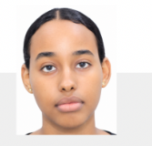

Licence en informatique
Université de Djibouti — développement logiciel, bases de données, programmation et systèmes d'information.
Étudiante en informatique, passionnée par le développement web, les systèmes d'information et les nouvelles technologies.
Je transforme des besoins concrets en applications utiles, avec une attention particulière à l'organisation des données, à l'expérience utilisateur et à la qualité du développement.

Étudiante en troisième année de licence informatique à l'Université de Djibouti, je développe mes compétences en programmation, conception de bases de données et développement d'applications web.
Mes expériences en stage et mes projets universitaires m'ont permis d'aborder des problématiques réelles : gestion administrative, gestion hospitalière, analyse de données et conception d'interfaces accessibles.
Je souhaite continuer à progresser en informatique et contribuer à des projets technologiques à fort impact.
Université de Djibouti — développement logiciel, bases de données, programmation et systèmes d'information.
Lycée privé Ileys.
École privée Waberi.
Administration et traitement des dossiers, organisation documentaire et utilisation des outils informatiques dans un environnement administratif.
Découverte de l'environnement informatique professionnel : réseau, matériel, maintenance, systèmes et outils de supervision.
Java · JavaScript · Node.js · PHP · C
SQL · Conception et gestion de données
Linux · Outils bureautiques · Développement web
Somali · Français · Anglais
Les captures ci-dessous proviennent de mes propres documents de projet. Cliquez pour les agrandir.
Conception d'une application de gestion hospitalière : accès utilisateur, tableau de bord, patients, rendez-vous, consultations, hospitalisations, facturation et rapports statistiques.
Développement web · Base de données · Système d'informationInterface web pour présenter les services d'une clinique et faciliter la gestion des patients, des médecins et des rendez-vous.
Développement web · Gestion de patients · Interface utilisateurTravail de modélisation des données et de structuration d'une solution informatique à partir de besoins fonctionnels.
Analyse · Modélisation · SQLCaptures non fournies : aucune image fictive n'a été ajoutée.
Conception d'une application de gestion des livres et des informations associées, avec une base de données relationnelle.
Développement web · SQLCaptures non fournies : elles pourront être ajoutées ultérieurement.
Pour une opportunité, une collaboration ou un échange autour de l'informatique, n'hésitez pas à me contacter.
Djibouti-ville · Djibouti